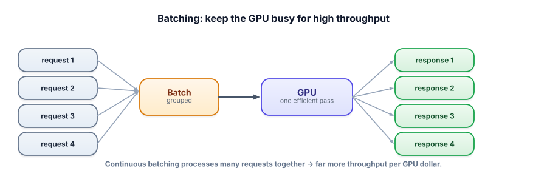

Batching & throughput
A GPU running one request at a time is mostly idle. Batching processes many requests together to keep it busy, dramatically increasing how many users one machine can serve. It’s the key to serving LLMs affordably at scale — and the source of the latency-vs-throughput trade-off you’ll constantly balance.
Why GPUs love batches
GPUs are massively parallel — they’re built to do many calculations at once. Serving a single request uses only a sliver of that capacity, so the GPU sits largely idle while you pay for the whole thing. Batching groups multiple requests and runs them together in one pass, using the GPU’s parallelism fully. The result: far more throughput (requests served per second per GPU) and thus far lower cost per request — the economics that make self-hosted LLM serving viable.

Batching processes multiple requests simultaneously on the GPU. Throughput is how many requests (or tokens) you can serve per second; latency is how long one request takes. These trade off: waiting to fill a batch can add a little latency to each request but greatly raises throughput. Continuous batching (used by serving engines like vLLM) is the modern approach — it dynamically adds and removes requests from the running batch as they arrive and finish, keeping the GPU maximally busy without making requests wait for a fixed batch to fill.
You rarely implement batching by hand. If you call a hosted API, the provider batches for you. If you self-host, you use a serving engine — vLLM, TGI, or similar (and even Ollama for local) — that does continuous batching automatically. Your job is to understand the trade-off so you configure and reason about it well, not to write the batching loop.
Throughput against latency
Increase the batch size. Throughput climbs, the GPU stops idling — and every individual user waits longer. There is no setting that wins both.
- A GPU serving one request is mostly idle; batching runs many requests together to use its parallelism.
- Batching raises throughput (requests/sec per GPU) → lower cost per request at scale.
- Throughput vs latency is a trade-off: bigger batches serve more but can add per-request latency.
- Continuous batching (vLLM, TGI) adds/removes requests dynamically for the best of both.
- The serving engine handles it — you configure and reason about it, you don’t hand-code it.
You self-host a model and costs are high because each GPU serves few users. Throughput is low even though latency per request is fine. What most directly helps?
What does increasing batch size trade off?
1. In your own words, why does running one request at a time waste a GPU?
2. Explain the latency/throughput trade-off, and when you’d favor each.
3. If you only ever call a hosted API (no self-hosting), how much do you need to worry about batching?
▸ Show solutions & reasoning
1. A GPU has thousands of parallel compute units, but a single request only occupies a fraction of them — the rest sit idle while you pay for the whole chip. It’s like running one item through a factory built for hundreds at once. Batching fills the unused capacity with other requests, so the same hardware does much more work for the same cost.
2. Bigger batches serve more requests per second (high throughput) but an individual request may wait a bit to be batched and shares the GPU, slightly raising its latency; smaller batches give each request lower latency but waste capacity (low throughput). Favor throughput when you’re serving lots of users and cost-per-request dominates (a busy product); favor latency when individual responsiveness is paramount and volume is low (a premium, low-traffic experience). Continuous batching largely lets you have both.
3. Much less — the provider handles batching and GPU utilization for you, baked into the per-token price. You don’t configure it. Your serving levers become routing, caching, token budgeting, and model choice. Batching becomes your direct concern only when you self-host, where keeping GPUs busy is central to your cost. (Still worth understanding, since it explains the economics behind the prices you pay.)
When you self-host, throughput engineering centers on a serving engine (vLLM is the popular open-source choice) that does several things in concert: continuous batching (dynamically packing requests so the GPU never idles waiting for a batch to fill or for the slowest request to finish), efficient KV-cache management (the model caches the keys/values of tokens it has already processed so it doesn’t recompute them each decode step — managing this memory well, as vLLM’s “paged attention” does, is what lets many requests share a GPU), and smart scheduling. You mostly configure rather than build this, but understanding it explains your knobs: batch size, max concurrent sequences, and how much GPU memory goes to the KV cache vs. the model.
Step back and the whole track forms a coherent serving strategy with two audiences. If you call hosted APIs, the provider has already done quantization and batching; your job is to call less and call cheaper — cache (skip calls), route (right-size calls), budget tokens (lean calls), and stream (better UX).
If you self-host, you additionally own the hardware efficiency — quantize to fit cheap GPUs and batch to keep them full — which is what makes self-hosting’s “no per-token fee” economics actually pay off. In both cases the meta-skill is the same as Track 6 preached: measure cost and latency as first-class metrics, find the real bottleneck, and apply the lever that targets it.
Throughput is just the self-hosting corner of that discipline — and continuous batching is the single biggest reason a self-hosted model can be cost-competitive at scale.
We’ve optimized the calls and the hardware. The last lever is the most universal: spend fewer tokens per call, on every call, forever. Next: budgeting tokens.